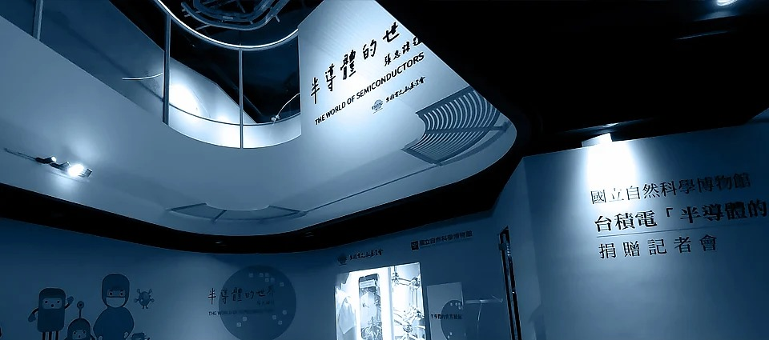
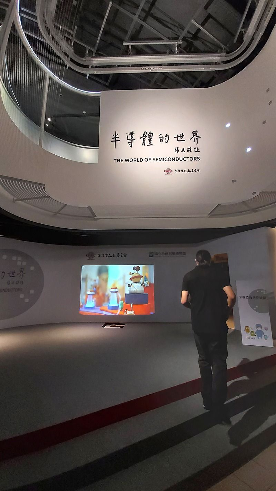
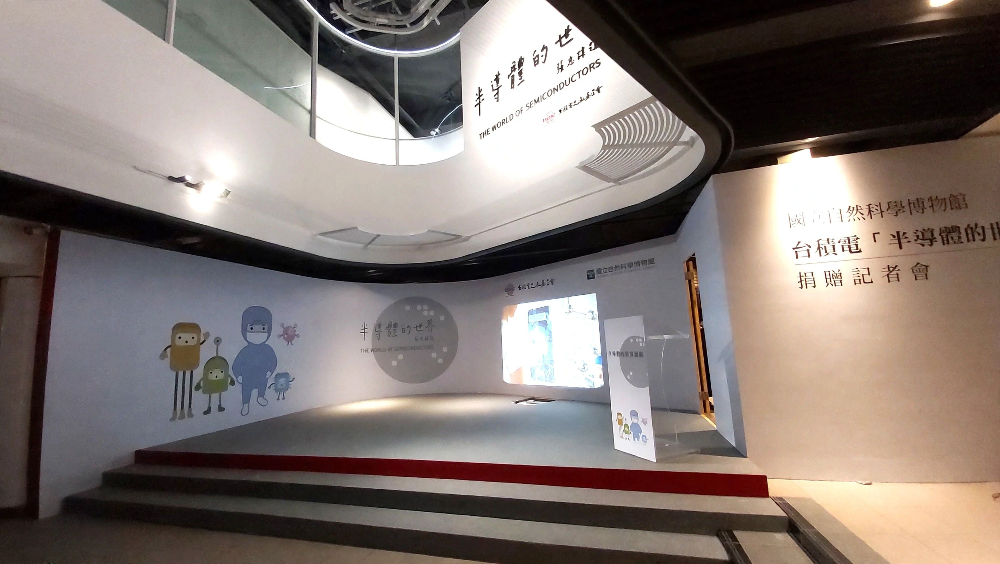

半導體的世界 臺灣積體電路 × 國立自然科學博物館
典禮結束後，連一個釘孔都不能留下
半導體的世界展館啟用典禮｜一場只租一天、卻要求零痕跡的舞台工程
配合台積電文教基金會捐贈國立自然科學博物館「半導體的世界」展館啟用典禮，我們在原有遊客通道入口處，搭設弧形背板牆面、架高舞台、燈光與音響等展演設施。場館屬於公有文化資產空間，規則只有一條，卻很不留情面：不能破壞原有牆面與地坪，活動結束後必須完全復原。
遊客照走，工程照趕
原本的通道必須維持遊客進出，我們用臨時圍籬區隔施工範圍，施作完全包覆的假設工程，保留足夠淨寬供遊客通行；大型結構的組裝與吊掛，全部安排在閉館時段進行，開館時段只維持既有外觀，不做任何高風險作業。
牆不能碰，舞台不能鑽
弧形背板牆面必須配合展館造型，卻不能鎖釘在原有牆面上–我們用獨立骨架系統在現場拼組成弧形，結構本身自立承重，完全不依附、不固著於館方原有牆體。骨架跟地面接觸的地方，用可拆卸式配重底座穩定，不用膨脹螺絲、不用釘槍，任何需要鑽孔的固定方式都排除在外；若因場地曲率複雜，需要局部倚靠既有牆面輔助定位，也只能用軟性緩衝墊做接觸緩衝，絕不直接施力在牆面漆面上。輸出面材則以魔鬼氈、夾具或束帶固定在骨架上。
架高舞台採全木作訂製的類積木模塊化工法：工廠先預裁製作各個獨立木作單元，模塊間以榫接、螺栓或快拆五金鎖合組裝，本身不與原有地坪產生固定接觸；每一塊模塊底部加裝可調式水平墊片與止滑橡膠腳座，靠模塊自重跟墊片微調來校正水平，不用地錨、不用膨脹螺絲、不鑽孔。因為舞台造型呼應弧形背板、不是制式方形，每一塊模塊都要依異形輪廓現場試組驗證，確認接合面密合、沒有高低差、沒有外露鎖件，避免遊客絆倒。組裝完成後，還要做結構穩定性測試–晃動測試、局部承重測試–確認無誤才能開放使用。投影機採地面隱藏式配置，安置在舞台結構內的預留設備艙裡，不與原有地坪接觸或固定。
復原，是這場工程真正的驗收標準
典禮結束後，我們訂定明確的拆除時程，儘速拆除全部臨時結構、配重物與線材。施工期間全程配置警示標誌與安全人員，舞台載重、模塊接合結構與投影設備艙也都在使用前完成安全檢核。真正的驗收，發生在拆除之後：對原通道、牆面、地坪逐一現場勘查，確認無刮痕、無殘膠、無鑽孔痕跡，由館方與工程單位共同會勘，確認沒有任何結構性損壞，才算完工–施工前後皆拍照存證，這座舞台從搭起來到消失，都得留得下證據，卻留不下痕跡。



